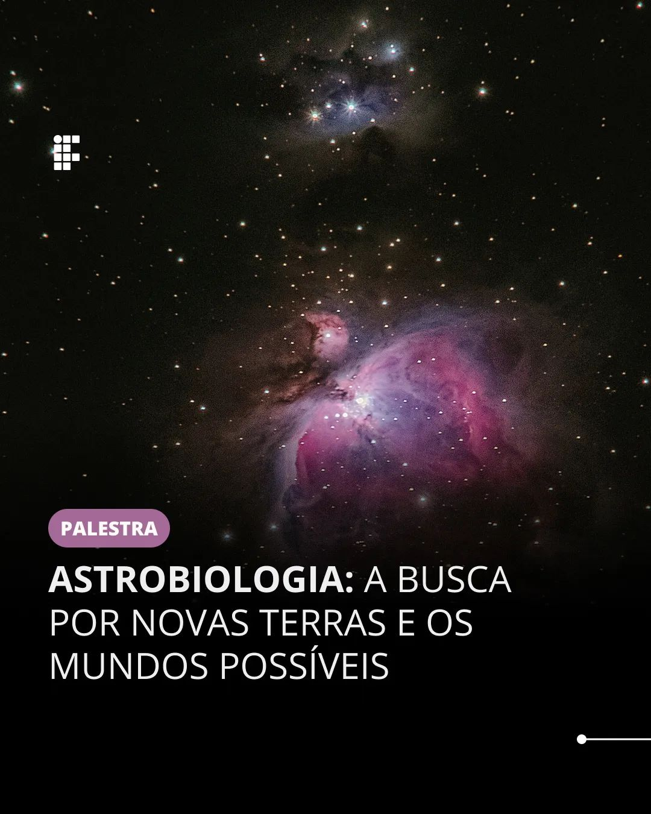

LABTEC UMA REVOLUÇÃO ESTÁ ACONTECENDO! Bem ao alcance dos nossos olhos... (na sala B105, para sermos mais exatos!) Da integração entre os núcleos das engenharias e de informática, nasce um filho prodígio que cresceu, e está enchendo os pais de orgulho! Saiba Mais ...
DESCARTE CORRETO FEZ O SEU DESCARTE CORRETO HOJE? Agora, em cada ponto de descarte do Campus JF existe uma lixeira de papelão destinada para materiais como latas, garrafas,embalagens de plástico, papéis secos, papelão e tampas. Não tem mais desculpa para misturar lixo reciclável com o comum - acesse a notícia completa em nosso portal!
ASTROBIOLOGIA  BUSQUEM CONHECIMENTO! Na próxima sexta-feira, dia 1º, o Campus JF recebe uma presença ilustre que irá revelar segredos cósmicos… As vagas são limitadas, viu? Link de inscrição na bio! Saiba Mais ...
RECREAÇÃ INFANTOJUVENIL DESCUBRA O PODER DA INLUSÃO! Participe da palestra sobre a "Recreação Infantojuvenil e Incorporação" no Miniauditório doBloco N, 28/11 às 19h! Maíla Corrêa, com 29 anos de expertise, compartilhará insights valiosos sobre a importância Saiba Mais ...
MÚSICA Apaixone-se pela magia da música! Em breve, os talentosos alunos do Campus JF estarão no palco, encantando a todos com seus dons musicais. As apresentações acontecerão no auditório do bloco administrativo e são abertas a todos os interessados - não perca! Saiba Mais ...
LABTEC REGISTRO DE PATENTE Wesley Aguiar Pereira é o terceiro estudante do Instituto a registrar uma patente a concretização de uma pesquisa em uma inovação tecnológica. Conheça o caminho do criador até a criatura e a união entre as suas paixões: a arte e a engenharia. Saiba Mais ...
AVALIAÇÃO INSTITUCIONAL UMA REVOLUÇÃO ESTÁ ACONTECENDO! Mesmo tendo conquistado nota máxima no MEC, o IF Sudeste MG sabe que é essencial a reflexão permanent e da gestão das políticas de Ensino, Pesquisa, Extensão e Administração. Saiba Mais ...
EVENTUALIDADES DESPERTE O GAMER QUE HÁ EM VOCÊ! A 11ª edição do E-ventualidades no Campus JF traz torneios de FIFA, Just Dance e concurso de Cosplay em 6 de dezembro. Aberto a todos, com inscrições online e regulamentos na bio! Saiba Mais ...